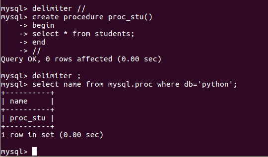

存储过程
- 存储过程，也翻译为存储程序，是一条或者多条SQL语句的集合，可以视为批处理，但是其作用不仅仅局限于批处理
- 本节主要介绍如何创建存储过程，以及如何调用、查看、修改、删除存储过程
- 存储过程也可以调用其他存储过程
查看
- 查询mysql数据库下的proc表
- 查看指定数据库中的存储过程
select name,type from mysql.proc where db='数据库名称';
例：
select name,type from mysql.proc where db='python';
创建
- 语法如下
- delimiter表示分割符，用于设置当前使用的分割符，mysql中默认使用分号;
- 默认需要使用分号表示sql语句的结束，所以在操作存储过程时，需要将分割符改为其它值
delimiter //
create procedure 存储过程名称(参数列表)
begin
sql语句
end
//
delimiter ;
例1：创建查询过程，查询学生信息
step1：设置分割符
delimiter //
- step2：创建存储过程
create procedure proc_stu()
begin
select * from students;
end
//
- step3：还原分割符
delimiter ;
- 执行效果图如下

调用
- 语法如下
call 存储过程(参数列表);
- 例2：调用存储过程proc_stu
call proc_stu();
删除
- 语法如下
drop procedure 存储过程名称;
- 说明：存储过程内部的sql语句无法修改，如果之前创建的存储过程不能满足要求，可以删除后重新创建
- 例4：删除存储过程proc_stu
drop procedure proc_stu;
- 再次查询则提示无数据
select name from mysql.proc where db='python';
- 更多存储过程的知识点，可以点击 存储过程详解 查看